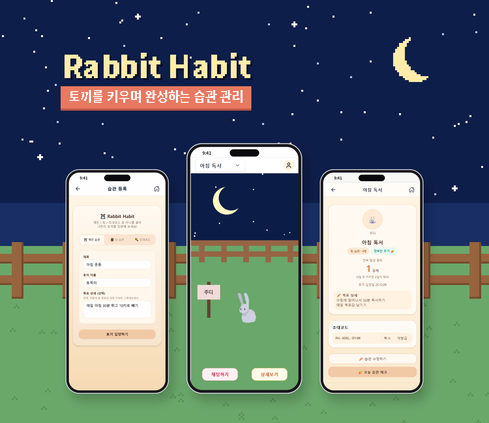

01
PWA · HABIT TRACKER · TEAM PROJECT
Rabbit Habit
팀 채팅과 실시간 알림을 통해 습관 형성을 돕는 개인·팀 습관 관리 서비스입니다.
픽셀 토끼의 상태와 성장 시스템을 통해 습관 실천에 대한 재미와 동기를 제공합니다.
ROLE
Full-Stack · 로그인, 메인 화면, DB 연동, 배포
WHAT I DID
- NextAuth.js 기반 로그인 전반 구현 (카카오 OAuth 연동)
- PixiJS(@pixi/react)로 토끼가 움직이는 픽셀 메인 화면 구현
- Prisma ORM으로 PostgreSQL 연결 및 스키마 관리
- Supabase Storage를 이용한 이미지 관리, Vercel 배포